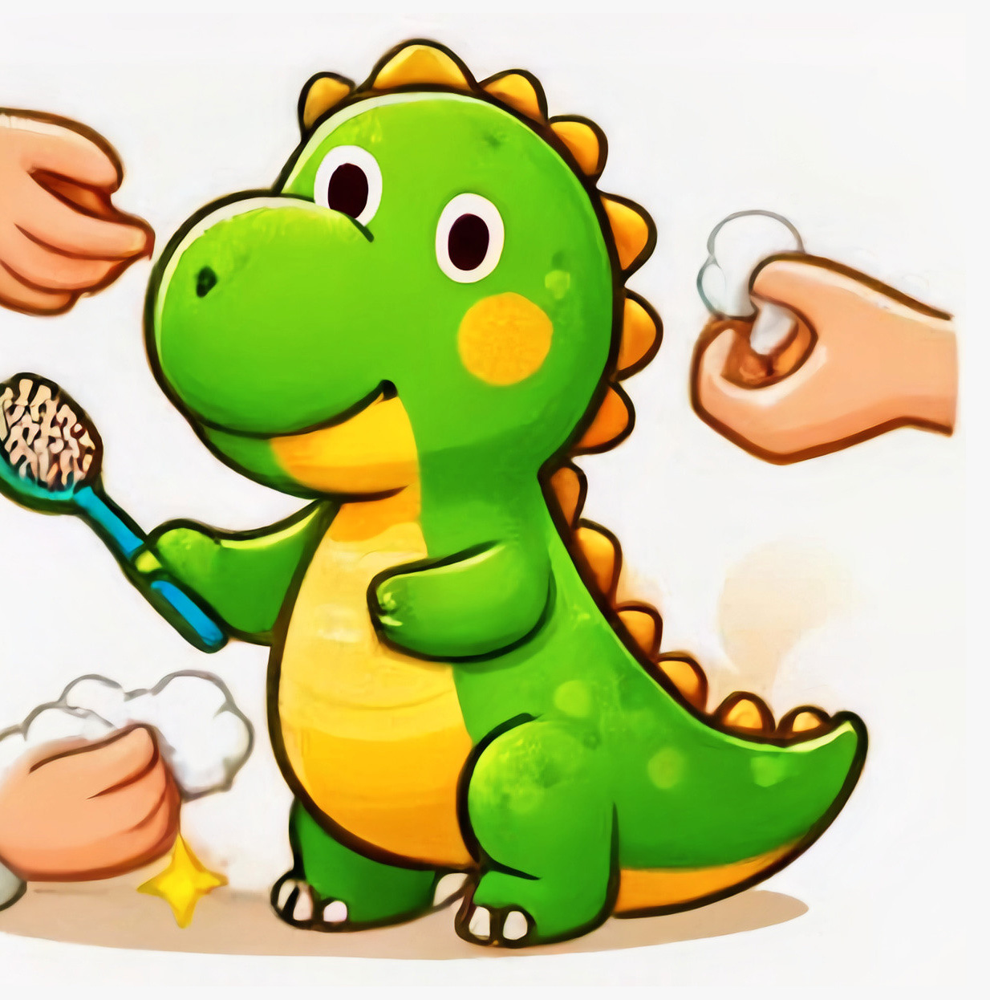

Um dos hábitos mais importantes da higiene geral é lavar as mãos com água e sabão sempre que possível, especialmente antes de comer e depois de ir ao banheiro. Assim, nós evitamos que os germes e bactérias entrem no nosso corpo e nos causem doenças.

Por Eduardo Vieira
Olá, crianças!
Eu sou o Dino, um dinossauro que adora cuidar da saúde.
Neste livro, eu vou ensinar vocês sobre a higiene geral, que é a forma de manter o nosso corpo limpo e protegido de doenças e infecções. br Vamos aprender juntos?
Higiene geral é o conjunto de hábitos e cuidados que temos com o nosso corpo para mantê-lo saudável e livre de germes e bactérias. Quando praticamos a higiene geral, nós prevenimos doenças e infecções que podem nos fazer mal.
Um dos hábitos mais importantes da higiene geral é lavar as mãos com água e sabão sempre que possível, especialmente antes de comer e depois de ir ao banheiro. Assim, nós evitamos que os germes e bactérias entrem no nosso corpo e nos causem doenças.
Outro hábito fundamental da higiene geral é escovar os dentes duas vezes por dia, de manhã e à noite, usando uma escova de dentes macia e pasta de dente com flúor. Dessa forma, nós prevenimos cáries e outras doenças bucais.
Tomar banho todos os dias é um hábito muito bom para a nossa higiene geral, pois ajuda a manter a nossa pele limpa e saudável. Para tomar banho, nós devemos usar sabonete suave e água morna, e lavar bem todas as partes do corpo, especialmente as áreas mais difíceis de alcançar.
Manter as unhas curtas e limpas ajuda a prevenir a propagação de germes e bactérias. Para cortar as unhas, nós devemos usar uma tesoura de unha afiada e limpa, e cortar as unhas retas e não muito perto da pele.
Lavar o cabelo pelo menos duas vezes por semana com shampoo e condicionador ajuda a limpar e hidratar os fios. Depois de lavar, nós devemos pentear o cabelo com uma escova de cabelo macia, que desembaraça os nós com cuidado. Por fim, nós devemos secar o cabelo com uma toalha limpa, sem esfregar.
Usar roupas limpas todos os dias é importante para a nossa higiene geral, pois evita irritações na pele e transmissão de germes e bactérias. Nós devemos lavar as roupas com frequência usando sabão em pó, e trocar as roupas de cama regularmente.
Parabéns, crianças!
Vocês aprenderam como cuidar da sua higiene geral comigo. Lembrem-se de que cuidar da nossa higiene ajuda a manter o nosso corpo saudável e feliz. Até a próxima vez, crianças!